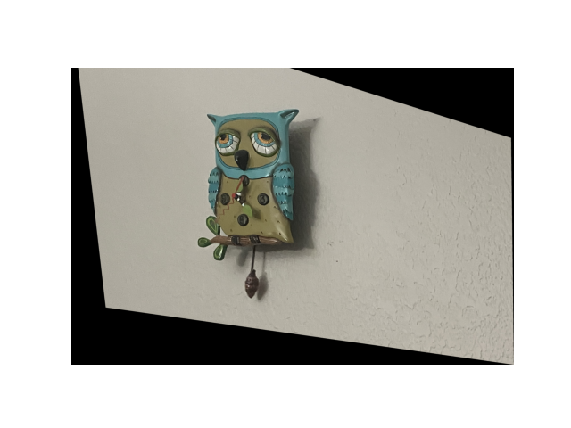
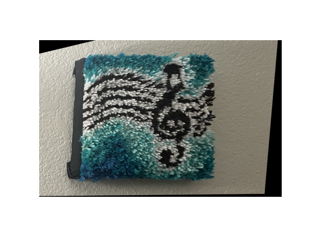
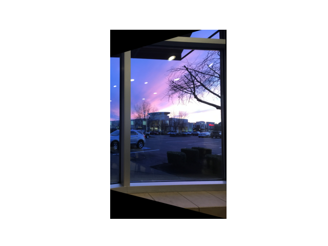

In this part, I create a homography matrix to warp Images onto different perspectives and ultimately create a photo mosaic.
Some things on my wall in my room. The last photo is a photo I took of the sky in south Seattle.


View of Berkeley Campus from my friend's apartment.


View of Downtown from another friend's apartment.


View from the Necluda Sky Archipelago from The Legend of Zelda: Tears of the Kingdom .
In order to create a mosaic, I first created a homography matrix, which is a 3x3 matrix used for warping source points p into the destination points q. Here is a derivation:


These equations are solved via least squares to get the homography matrix H. Once we get that, we can inverse warp the destination points q using the inverse of the H matrix to calculate where the points in the source image came from. One tricky thing about the warping function was that I needed to make a new bigger canvas for warped image just in case some pixels from the source image warp to a pixel location beyond the size of the image. For interpolation, I used nearest instead of bilinear interpolation because 1) it was easier and 2) my code for bilinear interpolation for project 3 was very slow and I didn't want to use it again.
We can use this warp function to rectify images:



We can also use this function to create panoramas using two images. To blend the images seamlessly, I used code from project 2 to create Laplacian stacks of images and a Gaussian stack of a simple black and white mask (which I created myself).


In this project I played around with mosaics. One key takeaway I learned is that image mosaicing is a little bit more complex than the other topics in past projects because it incorporates morphing and blending at the same time.